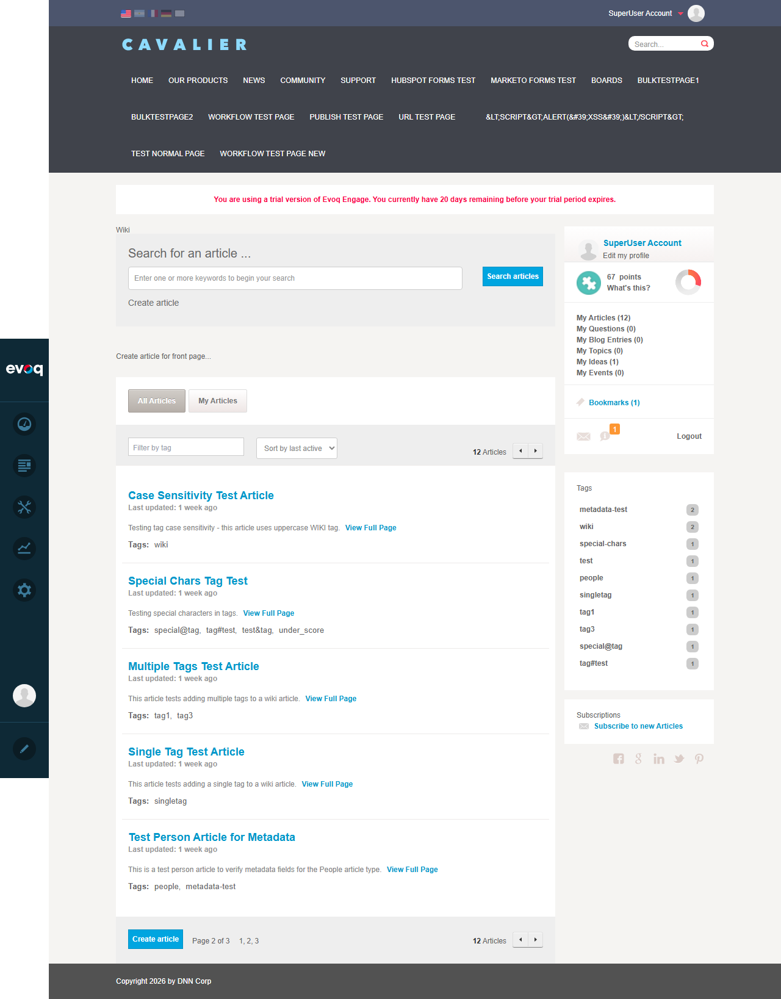
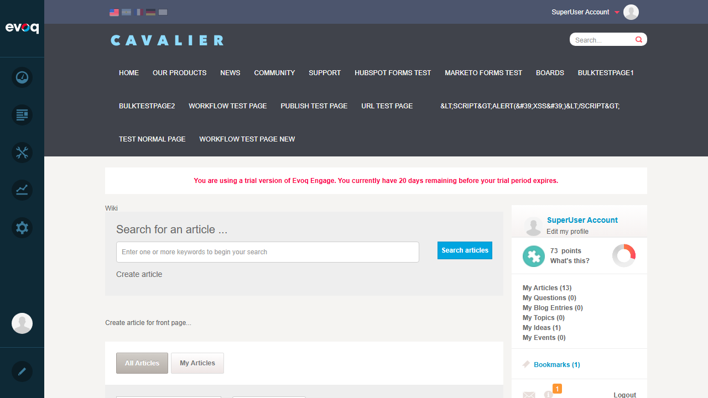
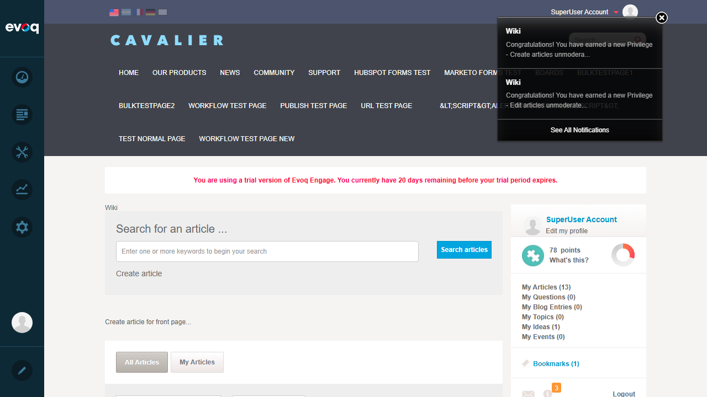
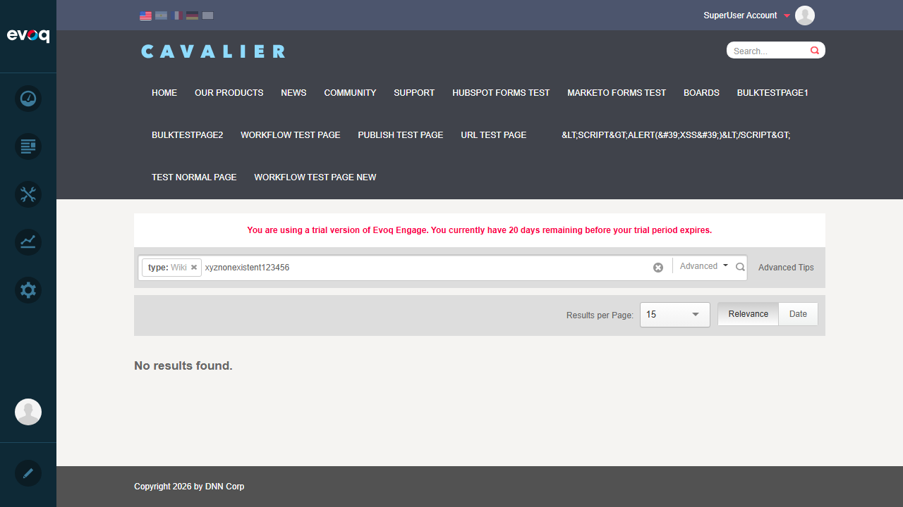

Navigate to Wiki module with multiple pages of articles
Click on page 2 in the pagination controls
Verify different articles are displayed on page 2
Expected Result: Navigation between pages should display different article sets
Actual Result: Page 2 displayed a different set of articles (Single Tag Test Article, Test Article - Title Updated, Test Draft Article)

Screenshot: Page 2 of article listing showing different articles
Test 6: Sort by date/title/views
PASS
Steps:
Navigate to Wiki module
Select "Sort by title" from the sort dropdown
Verify articles are sorted alphabetically by title
Select "Sort by views" from the sort dropdown
Verify articles are sorted by view count
Expected Result: Articles should reorder based on selected sort option
Actual Result:
- Sort by title: Articles reordered alphabetically (Article with Special Chars, Case Sensitivity Test, Multiple Mentions Test...)
- Sort by views: Articles reordered by view count (Test Article - Title Updated first with most views)

Screenshot: Articles sorted alphabetically by title

Screenshot: Articles sorted by view count (descending)
Test 7: Search with special characters
PASS
Steps:
Navigate to Wiki module search
Enter special characters "@#$%" in the search box
Click search and verify the system handles special characters gracefully
Expected Result: System should handle special characters without errors
Actual Result: The search executed successfully without crashing. The URL properly encoded the special characters and the search results page loaded correctly.
Screenshot: Search with special characters handled gracefully
Test 8: Test empty search results
PASS
Steps:
Navigate to Wiki module search
Enter a non-existent search term "xyznonexistent123456"
Click search and verify empty results are handled properly
Expected Result: A "No results found" message should be displayed
Actual Result: The search returned with a clear "No results found." message displayed to the user

Screenshot: Empty search results showing "No results found." message
Observations
Filter by article type: The code (ArticleController.cs) includes a GetAvailableTypes() method suggesting article type filtering is supported at the API level. However, no UI element was found to select or filter by article types. This feature may be available through API only or may not be fully implemented in the UI.
Draft filter accessibility: The draft articles filter (DraftOnly) is only visible in the mobile view dropdown according to the UI template (ListContainer.ascx). In desktop view, it can still be accessed via URL parameter ?category=draftonly and works correctly for users with moderator permissions.
Search scope: The Wiki module search automatically scopes searches to the Wiki content type, as evidenced by the URL parameter &Scope=Wiki and the "type: Wiki" badge in search results.
Sort options available: Four sort options are available: Sort by last active, Sort by created, Sort by title, Sort by views. All options work correctly.